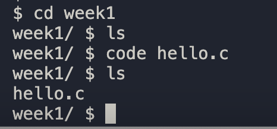

$ ./hello
hello, worldDon’t be alarmed by the length of this problem’s specification. Most of it is just instructions for getting your programming environment set up and learning how to navigate within it. Once these steps are completed, you’ll be good to go for the rest of the year in CS50 AP!
Implement a program that prints out a simple greeting to the user, per the below.
$ ./hello
hello, worldThis course’s philosophy on academic honesty is best stated as "be reasonable." The course recognizes that interactions with classmates and others can facilitate mastery of the course’s material. However, there remains a line between enlisting the help of another and submitting the work of another. This policy characterizes both sides of that line.
The essence of all work that you submit to this course must be your own. Collaboration on problems is not permitted (unless explicitly stated otherwise) except to the extent that you may ask classmates and others for help so long as that help does not reduce to another doing your work for you. Generally speaking, when asking for help, you may show your code or writing to others, but you may not view theirs, so long as you and they respect this policy’s other constraints. Collaboration on quizzes and tests is not permitted at all. Collaboration on the final project is permitted to the extent prescribed by its specification.
Below are rules of thumb that should guide you about reasonable and not reasonable. If in doubt as to whether some act is reasonable, do not commit it until you ask and receive approval in writing from your instructor. If a violation of this policy is suspected and confirmed, your instructor reserves the right to impose local sanctions on top of any disciplinary outcome that may include an unsatisfactory or failing grade for work submitted or for the course itself.
Recall that CS50 uses (cs50.dev) a web-based IDE "integrated development environment" that allows you to program "in the cloud," without installing any software locally. Underneath the hood is a popular operating system, Ubuntu Linux, that’s been "containerized" with open-source software called Docker, that allows multiple users (like you!) to share the operating system’s "kernel" (its nucleus, so to speak) and files, even while having files of their own. Indeed, CS50 IDE provides you with your very own "workspace" (i.e., storage space) in which you can save your own files and folders (aka directories). It looks alot like VS Code, now - because it's running - and you can choose to run in the cloud - or click the drop down of the green button on the CS50.dev page to run locally with VSCode locally on your machine. Try it on your 7Hills iPad!
After all, wouldn’t you like to get programming right away, without having to download, install, or configure much of anything at all?
Head to CS50.dev and log into through your github account. The first time you run it - it may ask for permissions and allow VSCode, Codespaces and/or Github to run together. Click through the various promts in the affirmative to run - if you aren't sure - slow down and read, then ask me questions in class next time.
You should then be informed that CS50 (workspaces or cs50.dev) is "creating your workspace" and "creating your container," which might take a moment. You should eventually see your workspace, which should resemble mine from week 1 - if not - see me ASAP.
You may see prompts from time to time in the lower right to update or restart spaces. Do not ignore these - take a moment to make sure your workspace has started and is fully updated and upgraded to save you delays and frustration later.
Notice there are thee main areas of the codespaces IDE - On the left a file explorer window (you may need to toggle on and off the icon to display the folders. Other icons will allow other tools we'll discuss later. In the top section of the window, a little off to the right - is the EDITOR pane - this is where you'll type and edit your code. In the lower section of the screen - you should see a $ or prompt - to indicate that the CLI - Command Line Interface is running. Again - more later. From the terminal - you can create directories or folders, compile or MAKE the program you just types, and run or './' the program to see it execute.
Let’s get started. First - in the terminal window at the bottom of the screen - we'll click to the right of the $ sign and type:
mkdir week1. "mkdir" is a command to create a new folder or directory. You should see a new folder appear in the left file window with the name "week1" -
- Now - it's easy to point or mouse and click on that folder, but in order to work in that folder with the terminal or command prompt, we need to change into that directory by typing cd week1.
You should notice the $ prompt has changed. It should now look like week1/ $.
Now - let's create a file in the new folder, week1 so we can write code in the file. Type code hello.c next to the prompt. Hit Enter. Now - you should see a new tab appear at the top 'edit' window and - if you move your mose and click on the 'week1' folder in the top left a new file, 'hello.c' should appear. In the command prompt or terminal, type ls. Notice that the terminal should look similar to the picture below (I'm using a dark mode theme)

Okay, on the top pane or window, you should see the tab labelled hello.c Let's write some code!
So - let's write your first program? Inside of your week1 folder, we created a new file called hello.c, and then opened that file in a tab. (Remember how?) Be sure to name the file just as we have, in all lowercase; files' and folders' names in Linux are "case-sensitive." Proceed to write your first program by typing precisely these lines into the file:
#include <stdio.h>
int main(void)
{
printf("hello, world\n");
}Notice how the IDE adds "syntax highlighting" (i.e., color) as you type, though the different theme colors might differ from this problem set’s. Those colors aren’t actually saved inside of the file itself; they’re just added by CS50 IDE to make certain syntax stand out. Had you not saved the file as hello.c from the start, CS50 IDE wouldn’t know (per the filename’s extension) that you’re writing C code, in which case those colors would be absent.
Do be sure that you type this program just right, else you’re about to experience your first bug! In particular, capitalization matters, so don’t accidentally capitalize words (unless they’re between those two quotes). And don’t overlook that one semicolon. C is quite nitpicky!
When done typing, the file should auto save - but you can choose ~/week1. (Remember how? If not, type cd and then Enter, followed by cd week1 and then Enter.) Your prompt should be:
week1/ $Let’s confirm that hello.c is indeed where it should be. Type
lsfollowed by Enter, and you should see hello.c? If not, no worries; you probably just missed a small step. Best to restart these past several steps or ask for help!
Assuming you indeed see hello.c, let’s try to compile! Cross your fingers and then type
make helloat the prompt, followed by Enter. (Well, maybe don’t cross your fingers whilst typing.) To be clear, type only hello here, not hello.c. If all that you see is another, identical prompt, that means it worked! Your source code has been translated to object code (0s and 1s) that you can now execute. Type
./helloat your prompt, followed by Enter, and you should see the below:
hello, worldAnd if you type
lsfollowed by Enter, you should see a new file, hello, alongside hello.c. The first of those files, hello, should have an asterisk after its name that, in this context, means it’s "executable," a program that you can execute (i.e., run).
If, though, upon running make, you instead see some error(s), it’s time to debug! (If the terminal window’s too small to see everything, click and drag its top border upward to increase its height.) If you see an error like "expected declaration" or something just as mysterious, odds are you made a syntax error (i.e., typo) by omitting some character or adding something in the wrong place. Scour your code for any differences using the code sample above. It’s easy to miss the slightest of things when learning to program, so do compare your code against ours character by character; odds are the mistake(s) will jump out! Anytime you make changes to your own code, just remember you need to recompile or type
make helloat your prompt, followed by Enter. (Just be sure that you are inside of week1/ $ within your terminal window, as your prompt will confirm or deny.) If still seeing errors, ask a neighbor to guide not give, talk to your duck or ask me (In that order).
Once you see no more errors, try "executing" (i.e., running) your program by typing
./helloat your prompt, followed by Enter! Hopefully you now see whatever you told printf to print?
If not, reach out for help! Incidentally, if you find the terminal window too small for your tastes, try zooming in (control and the plus sign or command and plus sign ).
Your program should behave per the example below. Assumed that the underlined text is what some user has typed.
$ ./hello
hello, worldcheck50 cs50/problems/2019/ap/helloAssuming your program is correct, you should then see output like
:) hello.c exists
:) hello.c compiles
:) prints "hello, world\n"where each green smiley means your program passed a check (i.e., test). You may also see a URL at the bottom of check50's output, but that’s just for staff (though you’re welcome to visit it).
If you instead see yellow or red smileys, it means your code isn’t correct! For instance, suppose you instead see the below.
:( hello.c exists
\ expected hello.c to exist
:| hello.c compiles
\ can't check until a frown turns upside down
:| prints "hello, world\n"
\ can't check until a frown turns upside downBecause check50 doesn’t think hello.c exists, as per the red smiley, odds are you uploaded the wrong file or misnamed your file. The other smileys, meanwhile, are yellow because those checks are dependent on hello.c existing, and so they weren’t even run.
Suppose instead you see the below.
:) hello.c exists
:) hello.c compiles
:( prints "hello, world\n"
\ expected output, but not "hello, world"Odds are, in this case, you printed something other than hello, world\n verbatim, per the spec’s expectations. In particular, the above suggests you printed hello, world, without a trailing newline (\n).
Know that check50 won’t actually record your scores in CS50’s gradebook. Rather, it lets you check your work’s correctness before you submit your work. Once you actually submit your work (per the directions at this spec’s end), CS50’s staff will use check50 to evaluate your work’s correctness officially.
If you’d like to play with the staff’s own implementation of hello, you may execute the below.
~cs50/2019/ap/chapter1/helloHead to the CS50 IDE and ensure that hello.c is in ~/chapter1/hello, as with:
cd ~/chapter1/hello
lsIf hello.c is not in ~/chapter1/hello, move it into that directory, as via mv (or via CS50 IDE’s lefthand file browser).
Visit submit.cs50.io, and login with your GitHub credentials. Then, head over to the email account you used to sign up for GitHub and accept the invitation link.
Then, head back to the CS50 IDE to submit hello, as with:
+
cd ~/chapter1/hello
submit50 cs50/problems/2019/ap/hello+ inputting your GitHub username and GitHub password as prompted.
If you run into any trouble, email sysadmins@cs50.harvard.edu!
You may resubmit any problem as many times as you’d like before the deadline.
Your submission should be graded for correctness within 2 minutes, at which point your score will appear at submit.cs50.io!
Be sure to re-type (and not just copy and paste!) the code we’ve provided you above to get this program running. It’ll be good to develop this muscle memory starting now!
This was Hello.